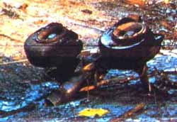

| From: "Tom Bearden" Subject: Your Commentary on the Arrow DC-8 Date: Tue, 6 Feb 2001 00:56:09 -0600
To: Russell Wangersky
Dear Russell, A correspondent sent me a copy of your article on the Arrow DC-8 incident at Gander, and then I checked it at The Telegram Online. Not too bad an article, though a little tongue-in-the-cheek, perhaps. But if you really wanted to know what I write or state happened to the Arrow, and the direct indications of it, you really should have called me up and asked me. A little hard electromagnetics knowledge greater than the standard model U(1) theory and ordinary electrical engineering might be interesting to you, since such has definitely not been applied by the Canadian Transportation Safety Board in investigating the Arrow DC-8 incident.
"Others [terrorists] are engaging even in an eco-type of
terrorism whereby
they can alter the climate, set off earthquakes, volcanoes remotely
through
the use of electromagnetic waves... So there are plenty of ingenious
minds
out there that are at work finding ways in which they can wreak terror
upon
other nations...It's real, and that's the reason why we have to
intensify
our [counterterrorism] efforts." In other words, these weapons existed in 1985 and were used to kill the Arrow DC-8 with 248 U.S. soldiers on board, returning from their peace-keeping duties in the MidEast, as well as the on-board crewmembers. Note that the Secretary did not speak the words in the square brackets of the quotation. Those words were inserted after his speech to perhaps tone the tenor down a bit. These weapons he referred to are more general, strategic weapons and they have been on site in Russia since 1963. They were tested worldwide in various incidents in the late 1950s and early 1960s, and are the weapons that Khrushchev referred to, in speaking to the Presidium in January 1960. They are not some little hand-held devices by terrorists. You cannot change the climate or initiate volcano eruptions or generate earthquakes by such little "ordinary" laser devices, etc. If you wish to initiate a volcano, e.g., you are going to have to get the excess energy down into the rocks beneath the earth, to where the volcano is still active, but just not breaching its channel on up to the surface and so dormant. None of your radar engineers, directed energy weapons fellows, local university professors, etc. can build EM systems that do that. Try it and see. Unfortunately, since the news media were so terribly concerned with the Clinton-Lewinsky scandal at the time (April 1997) that Secretary Cohen confirmed the weapons, not a single newsman or reporter there on the scene where this statement was made, even reacted to the first open confirmation of these weapons by a high U.S. official. Not one. Obviously not a titillating scandal sort of thing for the journalists. In short, Russell, the Secretary of Defense of the United States confirmed that there are indeed novel kinds of EM weapons, right now and have been for some time, which have been and are being used to (1) initiate earthquakes, (2) engineer the weather and climate, and (3) initiate the eruption of volcanoes. We wrote about those exact uses of the weaponry decades ago. Several nations now have such weapons. Three of them (two on one side and the other on a hostile side) are even firing practice shots into Western Australia, as a convenient test range. If one can build weapons that do those things the Secretary confirmed, they can jolly well shoot down aircraft with ease. And yes, destroy the U.S.S. Thresher with ease, which they did. Further, we wrote of scalar interferometry, which actually uses longitudinal EM wave transmitters to do the interferometry. But as we shall mention, the LWs are always accompanied by exactly one-to-one correlated time-polarized EM longitudinal waves in the time domain. Don't worry, the time-polarized EM wave does appear in quantum field theory, which is perhaps our most successful modern theory. It's just that Western scientists are only just now learning how to make longitudinal EM waves, and have not yet learned how to make the time-polarized EM waves. Actually they don't have to make them; they get them for free whenever they make a good longitudinal EM wave. Two weeks before the Russian scalar interferometer weapon killed the Arrow DC-8, in late November 1985 that same Russian weapon was practicing against convenient U.S. shuttle launches at Cape Canaveral, Florida, for crew training, and was offsetting the strike of the resulting electromagnetic missile formed to do the dirty work (final kill) so it would not hit the shuttle and kill it. I obtained the rights to a photograph taken by Bob Gladwin of the actual strike of that EM missile, offset from that night shuttle launch in latter Nov. 1985, and published that photograph openly. I attach a picture of that photograph. In other words, I published the smoking gun, not idle speculation. In the sky above the shuttle launch at Cape Canaveral that night was another little stationary EM missile (ball of EM energy, glowing) used as a known registration point. The Russians were using a standard artillery firing technique: shift from a known registration point. As an old field artilleryman, I had no difficulty whatsoever in recognizing that familiar type of artillery registration and how the shooting was being conducted and why. Hundreds of persons in that area in Florida that night observed that latter "registration point" ball of light high above the shuttle launch. I also obtained the rights to a photo of that ball of light as the distant operator slew it away. I bought it from George Suchary, the photographer who took it, and published it as well. I also include a snapshot of it. Further, that photo (by George Suchary) was also published in the Fort Pierce Tribune in Florida. Check it out. This is about two weeks before the Arrow DC-8 was killed at Gander. The Russian crews were practicing even then. Two weeks later, that same Russian longitudinal EM interferometer weapon that had been doing its final crew training and firing practice against U.S. shuttle launches in latter Nov., killed the Arrow DC-8 at Gander on Dec. 12, 1985. We also published the fact that, courtesy of British intelligence, a Western spy in a secret meeting of the Communist Parties of Europe in Prague, in 1975, chaired by Brezhnev, had something significant that later was to bear on the year 1985, when the Arrow was killed. Therein 1975 Brezhnev actually named the year, 1985, that the Russians expected to be able to move anywhere in the world they wished, control the airspace over the ocean and over much of the land, etc. So 1985 was a "watershed" year in which the Soviets planned to be ready to do whatever they might wish. They made that schedule, and the Arrow DC-8 was just one of the tests conducted in 1985. They had to "kill" something, however, to prove the final milestone for the 1985 success of the schedule. The Gander incident was the demonstration that the milestone had been successfully met. The tests then continued on into 1986 and especially Spring of 1986, as I previously wrote. Two other kills were a Titan ICBM fired from Vandenberg AFB, and a picture of that explosion is also published in Aviation Week & Space Technology. There are two of the photos, one cropped to simulate close-up, and one the original shot from further back where you can see above the explosion which is well-developed. There about an inch above that explosion is that little tell-tale "registration point" ball of light. Check it out. I had an engineer friend at NBC in Los Angeles study that videotape, frame by frame. That little ball of light appeared in 17 frames, and moved off completely independently of the explosion. There were no "bogies on the range" at Vandenberg AFB when the Titan was launched. Again, we had the smoking gun. The kill was simple, very similar to the kill of the U.S.S. Thresher. Just surge the rising missile with some EM energy appearing in the missile right out of the local spacetime. That explodes the propellant all-at-once, hence the missile explosion. That was the test of an interferometer used in a launch-phase ABM defense system mode. The Arrow DC-8 was a simulated test of the launch-phase anti-nuclear-bomber mode, where the bomber is killed on the runway or just at or shortly after take-off.
 Further, at Gander on Dec. 12th, a Canadian eyewitness, Judy Parsons, physically saw the actual strike of the EM missile, as a streak of light that came out of the clouds and struck the aircraft just at or after its liftoff, hitting it in the right fuselage ahead of the wing and engines. A picture of the hole burned right through the fuselage of the aircraft was published in Aviation Week & Space Technology -- check it out. The edges of the holes were tested and there were no explosives residues there. Further, the recorders on board the aircraft, on two separate channels, were "pulsed" by that EM missile strike, precisely at the same time, and thus recorded the sudden anomalous voltage pulse resulting from a strong EM anomaly that had struck the aircraft. Again, go check it out on the recorder prints themselves. Don't just write about it from afar, but be an investigative reporter. Further, the EM ball of energy explosively entered the forward cabin very energetically. It explosively and instantly massively ignited the plastic material in the forward cabin, zipping around furiously in there. The plastics explosively outgassed -- one product being hydrogen cyanide. A few breaths and any and all in that area were either dead of cyanide poisoning or were dying of it. Autopsies of the bodies later showed that about half the personnel on the aircraft were in fact dead of hydrogen cyanide poisoning prior to the crash and explosion of the aircraft. That information, however, seems to have been withheld from the Canadian Transportation Safety Board. Again, go check it out. How many aircraft that have been destroyed by terrorist bombs worldwide, have showed that half the dead personnel died of hydrogen cyanide poisoning before the explosion or destruction of the aircraft? Again, go check it out, don't just sit in your chair and write. The rigorous scientific proof of scalar interferometry is contained in a paper by Myron W. Evans, P.K. Anastasovski, T.E. Bearden et al. (some 15 authors), "On Whittaker's Representation of the Electromagnetic Entity in Vacuo, Part V: The Production of Transverse Fields and Energy by Scalar Interferometry," Journal of New Energy, 4(3), Winter, 1999, p. 76-78. If you will check, you will find that Evans is a world-class theorist and has over 600 papers in the hard science literature, is also the prestigious editor of scientific books and series as part of the series by Nobelist Prigogine for Wiley, etc. Many others of the 15 or so authors are also recognized and even prestigious scientists. So the referenced paper is of very high scientific quality. It's for real. The AIAS group that published this referenced paper also has many other scientific publications in higher symmetry electrodynamics (far beyond the ordinary electrical engineering and radar engineering!) in leading journals such as Foundations of Physics, Physica Scripta, Optik, etc. Again, go check it out. This is physics. Simply check the citations in the literature under those names. Then decide whether this is an idle conspiracy theory or not. By biasing the transmitter chassis grounds either highly positive or highly negative, the hostile interferometer weapon can control whether diverging (scattering, hence heating) EM energy or converging (cooling) EM energy is produced in the distant interference zone. In the Arrow case, the same weapon was used in two modes and switched abruptly between the modes. First, converging energy was produced inside the combustion chambers of the engines. Note that this EM energy arises right out of the local spacetime, from "inside" the system and proceeding toward the outside. It does not "propagate through 3-space" in the normal sense, or like normal EM waves, from "outside" to "inside" if it can get there. It starts in the inside already. As we stated, this is not your usual electrical engineering! The electrical engineers at your local university will not have the foggiest notion of what we are saying, or that what we are saying is already rigorously proven. But if you really wish to know what killed the Arrow, you are going to have to get into something that your local university professor probably does not even know. He does not design and build longitudinal EM wave interferometers. The emerging convergent (cooling) energy in the jet engine gases cooled the combustion, hence reduced the thrust of the engines although the turbines were turning at normal speed. Now what is important in aircraft lift is the ratio of thrust per weight. If for a given thrust the weight is increased (such as in heavy icing), then the thrust per weight ratio is reduced as is well-known and recognized. On the other hand, if there is no increase in weight but the thrust is reduced by engine combustion cooling, the thrust per weight ratio is reduced also. This latter method of reducing aircraft lift does not appear in the checksheets of the investigative boards in either Canada or the United States, because they know nothing of longitudinal EM wave interferometry. Those Investigative Boards know nothing about longitudinal EM wave interferometry, exothermic and endothermic modes, etc. Nonetheless, a previous test of this capability had been conducted earlier that year, by flaming out the engines one-by-one of a jetliner heading back to Los Angeles over the northern route. The aircraft fell some 30,000 feet before the pilot managed to restart the engines, turn and limp into San Francisco and land as a emergency measure. A major signature that spacetime curvature was involved, occurred on that aircraft, and was completely unrecognized by the investigators (whose electrical expertise is essentially confined to electrical engineering, radar, communications, etc.). That incident made the international headlines and news, so you should be able to check it out easily. In the Arrow DC-8 incident, check the results of analysis of the recorder channels. As the pilot lifted off, he instantly felt the reduced lift, and knew that he had a serious problem because the aircraft was not lifting as it should. He apparently recognized how serious this was, and started to turn to the right, probably to come back around and land again and get the aircraft rechecked. The aircraft had been de-iced and it was checked again for ice before take-off. It was not iced, in spite of the official board "finding" when half the members of the board --those dissenting -- were conveniently absent. At that moment when the pilot just started his right turn, the distant operators switched the interferometer chassis grounds to "hot" mode potentials, narrowed the beaming (this is not propagating through space as is normally modeled in ordinary electrodynamics, but is propagating "inside" the great electrostatic scalar potential that is the active vacuum and decomposes into bidirectional longitudinal EM waves by Whittaker' 1903 decomposition). You will be hard put to find a Canadian or U.S. professor who has really read and studied that 1903 Whittaker paper. Mass is also mostly empty space filled with EM fields, potentials, and waves (all of which are just bundles of EM longitudinal waves and their dynamics, as shown by combining Whittaker's 1903 and 1904 work in two papers). So there is a vast "new" kind of electromagnetics infolded inside all our normal EM waves, potentials, and fields. That is rigorous and now established, though hardly known. So Longitudinal EM waves are free to propagate "inside" and "through" the interior (a sort of "subspace" inside) of normal EM waves, potentials, and fields. Thus both intervening space and mass (mass is mostly empty space filled with EM potentials, waves, and fields!) are great superhighways of huge bundles of longitudinal EM waves (subspace) through which one can readily pass additional longitudinal EM waves at will. Stick around; a friend and close colleague has invented a communications system using that infolded longitudinal EM inside normal fields, waves, and potentials. He has demonstrated superluminal communication inside DC potentials, including both black and white and color TV signals, and has unlimited bandwidth. His work is being licensed by several major communications companies of the world, and will just quietly start appearing in equipment in the market place. Bandwidth is the awful millstone around the big communications systems' necks, and my colleague has the answer to that problem. You will see those systems emerging before the end of this year. You can count on it. In its changed mode at Gander, the sharply narrowed interferometer beams were used to produce -- well above and off to the right side of the aircraft -- a very hot little ball of EM energy a few inches in diameter. Then the distant operator simply moved this "EM missile" sharply down to coincide in position with the lifting Arrow aircraft just beginning its turn to the right. Rather like placing one's range tracking cursor over the target. The EM missile struck the aircraft in the right forward fuselage as stated, with the results as stated. With half the personnel dead and dying of cyanide poisoning in seconds, the stricken craft sank, still tail-down, and struck the ground and exploded, killing all on board. It doesn't end there. At the time, the National Security Council of the United States was engaged in a blatantly illegal and criminal clandestine business, the Iran-Contra affair, which had not yet been openly exposed. The NSC itself apparently suspected that an Arab terrorist bomb was what did the Arrow DC-8 in. To the NSC, the most important thing was not to have a finding of Arab terrorist bomb, else the hue and cry from the American public and subsequent necessary extensive investigations by several agencies would likely uncover Iran-Contra. I point out that the Iran-Contra was felonious, not a misdemeanor, and literally was high crimes in high places. So yes, we really are pointing out a criminal conspiracy also involved in the Arrow DC-8 affair. And it really was there as stated, and Iran-Contra really was later forced into the open. So the U.S. placed great pressure on the Canadian government to get its Arrow investigation finished quickly and have a finding of de-icing. Now perhaps one can understand why the Board hastily published a report when about half its members -- conveniently the dissenters -- were absent. Eyewitnesses who actually saw the streak-down of the EM missile with their own eyes, and saw it physically strike the aircraft, were not allowed to testify to the Canadian board, and the board did not see their eye witness written testimony either. A high ranking American officer arrived on site, and seemed most anxious for the site to be quickly bulldozed over. The Canadian board split on its finding, and the "official" finding was quickly published only when the dissenting members were physically absent. And so on. Yep, there was a conspiracy all right -- to prevent the Iran-Contra affair from being smoked out in the open. It doesn't end there. When a physical system such as an aircraft is struck by such an EM missile formed out of locally curved spacetime, the energy -- as we stated -- arises from everywhere within that local ST and goes outward (for diverging energy mode). We have a completely different EM nuclear reaction set, than anything that presently appears in particle physics, because they simply do not consider "inside out" EM energy propagation and interactions with the quarks and gluons inside the nucleons. Hence where the EM missile strikes and penetrates the metal, there is a most unique nuclear interaction that does not and cannot occur with normal EM transverse wave weapons which propagate their energy beams through space normally, and thus from "outside" to "inside". In the LW interferometry case, the energy arises from within the atoms -- even within the nucleons themselves -- and proceeds outside the nuclei, atoms, etc. In short, it interacts first with the gluons and quarks, etc. in the nucleons of the struck material. The result is that a quark can be flipped easily by this kind of different "inside to outside" excitation. The result of quark flipping is to change the isotope of struck metal by changing a neutron into a proton or vice versa. There is one new isotope of Aluminum that can be and is formed that way, that is also long-term weakly radioactive. Hence it persists in the struck metal for years. Therefore a rigorous measurement of the exact isotopic constitution of the aluminum in the exact struck material will show an isotope constituency that differs from that in the rest of the aircraft aluminum. Mass spectrometry can reveal the isotopic composition change. If this kind of test finds that isotopic change, then that is 100% proof that a scalar interferometer hit that target at that point, since directed energy weapons of normal kind do not change the isotopic constitution of the aluminum. Lasers and ordinary directed energy weapons do not have such an effect, because there is no "inside to outside" energy in them. Also, ordinary explosions do not cause such isotopic change of the aluminum. Such a test, of course, was not conducted upon the Arrow, and to my knowledge has not been conducted on other aircraft also shot down -- over the U.S. or Canada or close to them -- by foreign longitudinal EM wave interferometers. It still does not end there. When an LW interferometer makes a violent strike on a target with an EM missile in that fashion, there is another effect. Without going into the physics (the AIAS has several published papers related to this in refereed journals), there is a kind of electrical charge that occurs in the time-domain. Before your normal EEs foam at the mouth, let me call your attention to the various polarizations of the photon in quantum field theory. One of the polarizations is called the "time-polarized" or "scalar" photon. That photon's energy is not oscillating in 3-space at all. Instead, it is oscillating in the time-domain. That is physics, go check it out. It isn't in normal electrical engineering or radar engineering or normal communications theory at all. Many physics professors are only dimly aware of it. The AIAS also has papers clearly showing the EM longitudinal energy waves and currents in the time domain. So one can electromagnetically charge (excite) a mass in the time-energy domain as well as in the more conventional 3-space energy domain. It's a fact, but your radar engineers and EEs do not know it, and very few university professors would be aware of it. Nonetheless it is true. As contained in work we have recently published, with every longitudinally polarized EM wave there is an accompanying time-domain (time-polarized) EM wave as well, but in 4-space since it is in the time-domain. So a very abrupt and powerful strike by longitudinal EM waves is also a very powerful and abrupt strike by the accompanying EM wave energy in the time domain. The result is to "time-domain" charge (rather instantly) the struck masses. Note that time-energy is highly compressed EM spatial energy, compressed by the factor c-squared. Hence time-energy has the same energy density as mass-energy. A little time-charge has a lot of EM energy in it, if the energy is released in expanded spatial energy form, which is what happens when time-charges slowly decay. So these "time-charged" masses then slowly decay and emit longitudinal EM waves for some time thereafter, as the "time-charge" slowly decays away over a period of time. The human body (particularly the cellular regeneration system, which is "peculiar electromagnetics" in nature) does use this higher symmetry kind of electrodynamics, in cellular control, control of the immune system and cells, and control of cellular functioning and healing. Exposure of the living body to significant LW EM radiation will interfere with these body functions. After a bit of time, all sorts of symptoms will emerge in the LW-irradiated and exposed bodies: the symptoms include headaches, nausea, dizziness, stomach and intestinal difficulties, weakness, loss or upset of equilibrium, arthritic symptoms, excess fatigue syndrome, various chronic pains and aches, rashes, etc. Fairly significant exposure to LW EM radiation over some hours will usually generate long-lasting symptoms and even long-lasting debilitation. Some 60 of the Canadian ground handlers engaged in wreckage retrieval at Gander, were exposed to such longitudinal EM emission from the wreckage. These handlers came down with the appropriate symptoms, many were debilitated, and some perhaps long-term debilitated. Check it out. That does not and cannot happen in retrieval of normal wreckage with no excess longitudinal EM radiation. It cannot happen in retrieval of the wreckage of an aircraft struck by a terrorist bomb of normal explosives such as C-4. It can only happen where those ground-handlers have significant LW EM radiation exposure. Some aggravation by smoke inhalation etc. was also probably present. So try to find an ordinary aircraft wreck where five dozen ground handlers all came down with symptoms of excess longitudinal EM wave irradiation. It doesn't exist. Also be advised that most major weapon labs in the world now have at long last discovered longitudinal EM waves and related impure longitudinal EM waves with some transverse EM wave residues. Such impure longitudinal EM waves are called "Undistorted Progressive Waves", or UPWs for short. E.g., get on the Los Alamos National Laboratory web site, and download some papers on "undistorted progressive waves" etc by Rodrigues, Liu, etc. You may be surprised to see what astounding characteristics such waves (longitudinal waves that are impure and still have some transverse EM wave residues) exhibit. Such as traveling faster than the speed of light or slower than the speed of light. The continually advancing field of electrodynamics does encompass a great number of things that probably are not yet being taught at your favorite university! Further, the things taught at university as "Maxwell's equations" are not such at all; not a single one of those ever appeared in any paper or book by James Clerk Maxwell. Instead, those are Heaviside's reinterpretation of a small subset of Maxwell's theory. Maxwell's actual theory is some 20 quaternion equations in 20 unknowns. Only a tiny, highly restricted subset is available to the electrical engineers, radar engineers, communication engineers, etc. Quoting a very fine electrodynamicist: "[T]he A field [for the potentials] was banished from playing the central role in Maxwell's theory and relegated to being a mathematical (but not physical) auxiliary. This banishment took place during the interpretation of Maxwell's theory... by Heaviside... and Hertz. The 'Maxwell theory' and 'Maxwell's equations' we know today are really the interpretation of Heaviside... Heaviside took the 20 equations of Maxwell and reduced them to the four now known as "Maxwell's equations." [Terence W. Barrett, "Electromagnetic Phenomena Not Explained by Maxwell's Equations," A. Lakhtakia, ed., Essays on the Formal Aspects of Electromagnetics Theory, World Scientific Publishing, River Edge, NJ, 1993, p. 11 and generally p. 6-86.]. As another good electrodynamicist put it: "James Clerk Maxwell originally enunciated his theory in 1864 in a memoir entitled 'A dynamical theory of the electromagnetic field'. ...However, it was Oliver Heaviside who first expressed them in the form that we know today in the Philosophical Magazine, February 1888. The striking proof of the importance of Maxwell's theory was given by Heinrich Rudolf Hertz in 1888 when he actually produced electromagnetic waves and effectively measured their speed of propagation, which came out equal to light speed in vacuum. This directly confirmed Maxwell's hypothesis concerning the existence of electromagnetic waves." [Patrick Cornille, "Inhomogeneous waves and Maxwell's equations," Essays on the formal Aspects of Electromagnetic Theory, Ed. A. Lakhtakia, World Scientific, 1993, p. 138.]. Anyway, perhaps that gives you an inkling of what happened to "Maxwell's real theory". Only a small subset is taught in universities, except in very few cases. You can do lots of things in Maxwell's quaternion theory than you cannot do at all in the highly truncated standard tensor and vector Heaviside theory taught at university. Even so, you do not get the "infolded" electrodynamics unless you apply Whittaker's decompositions. Whittaker's second (1904) paper initiated the branch of electrodynamics called superpotential theory. The 1903 paper, which is necessary in combination with the 1904 paper to arrive at the "infolded" electrodynamics, was resoundingly ignored by almost all electrodynamicists and physicists, even to the present day. Those two references are: E. T. Whittaker, "On the Partial Differential Equations of Mathematical Physics," Mathematische Annalen, Vol. 57, 1903, p. 333-355; ------- "On an Expression of the Electromagnetic Field Due to Electrons by Means of Two Scalar Potential Functions," Proc. Lond. Math. Soc., Series 2, Vol. 1, 1904, p. 367-372. The latter paper was published in 1904 and orally delivered in 1903. We call attention to the fact that there are hundreds of incidents of the testing of Russian longitudinal EM wave interferometers worldwide, and one can easily gather them from the open literature by their "signatures". So I would encourage you to be serious about what has been a deadly threat to Canada and to the United States for some decades. And believe then U.S. Secretary of Defense Cohen when he confirmed that some very unusual electromagnetic weapons do exist and are being used against us. Here's how you initiate a very large earthquake with such weapons. Take a convenient fault zone of set of them. Focus the interferometry on the fault zone, in the "diverging" mode, and deposit EM energy there in the rocks on both sides, increasing (slowly) the stress in the rocks by the reverse piezoelectric effect (deposit excess energy, get crystal mechanical movements). Do it slowly, and the stress will build up to large pressures well-above a plate slip minimum energy required. At some point, the rocks yield and one or both sides "slip" and move rather sharply, giving a very large earthquake in that zone. Do the same thing down in the earth (remember, LWs easily penetrate right through the earth and ocean at will, and so the "interference zone" focus can be inside the earth or beneath the ocean, at will. Anyway, focus this thing down to where the active part of the volcano is still slumbering, down where the hole in the plate has been made. Keep increasing the deposition of energy in the magma itself, and eventually the increasing pressure from deep within that volcano, underground, will cause an eruption. Build the energy slow, and the eruption will likely be much larger. Engineering the weather is duck soup; they tested that over the U.S. in 1967, and entered upon continuing operations over North America on July 4, 1976 as a grim kind of KGB "Bicentennial Gift" to the United States. Here's how it is done with several interferometers. First, the interferometers can deliberately make "high pressure areas" (cool the air so it shrinks and its "footprint" pressure on the ground increases because its density increases) and "low pressure areas" (heat the air so that expands and its "footprint" pressure on the ground decreases because its density decreases). Well, if one makes the highs and lows where one wishes them, and judiciously and somewhat slowly moves them along a given path, these highs and lows will entrain the jet streams and thus "steer" the weather. So if you wish a very cold snap or attack, go up into Canada and start these actions to steer down some streams that bring some very frigid air. Establish other highs and lows judiciously to "block" or "slow" other jet streams and flows as desired. In this way, one can pull the "large cold air masses coming down from Canada" deep into the southern U.S. at will. They do it regularly. If you wish an ice storm, add an additional current of warm moist air you bring up (steer up by using artificial highs and lows) from the ocean. Where they meet, you will get freezing rain, then sleet, then severe icing accumulating. This type of attack does rather large damage to the struck area. There are many other things and incidents of use of these weapons that have occurred. However, this should give you the gist of what really happened at Gander on Dec. 12, 1985. The "lights in the sky" are often used in an area to stimulate public reactions of "UFOs sighted" etc. E.g., check the sightings of such surrounding the kill of the TWA-800. Also check the incidents of deliberate "balls of light" moved along in the same area a few months later, so that airliner crews would spot them and report them. These were stimuli to see if the official system recognized what was going on. They didn't. Just as the officials up there in Canada did not recognize what went on in the kill of the Arrow DC-8 there at Gander. Best wishes,
Tom Bearden, Ph.D. |
 Here's a direct quotation from the U.S. Secretary of Defense, dealing
with
the very kind of electromagnetic weapons that you thought was a
conspiratorial notion of mine when I wrote about them openly.
Feel free to
check the reference; it's in the official transcript as cited.
Here's a direct quotation from the U.S. Secretary of Defense, dealing
with
the very kind of electromagnetic weapons that you thought was a
conspiratorial notion of mine when I wrote about them openly.
Feel free to
check the reference; it's in the official transcript as cited.